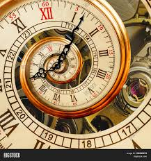

History of Timekeeping
Time has been measured for centuries using different methods. Early civilizations used **sundials**, hourglasses, and water clocks to track the passing of time.
The invention of mechanical clocks in the 14th century revolutionized timekeeping, leading to modern digital and atomic clocks.
Units of Time
- 1 Second = The base unit of time.
- 1 Minute = 60 seconds.
- 1 Hour = 60 minutes.
- 1 Day = 24 hours.
- 1 Year = 365 days (or 366 in leap years).
Fun Facts About Time
- A day on Venus is longer than a year on Venus
- Atomic clocks are so precise they only lose 1 second every 100 million years.
- The idea of a leap year was introduced by Julius Caesar in 45 BC.
- Time slows down as you approach the speed of light (thanks, Einstein!).
- The world's oldest clock is over 600 years old and still works!
A Visual Representation of Time
Learn More
Explore more about time at Time and Date.